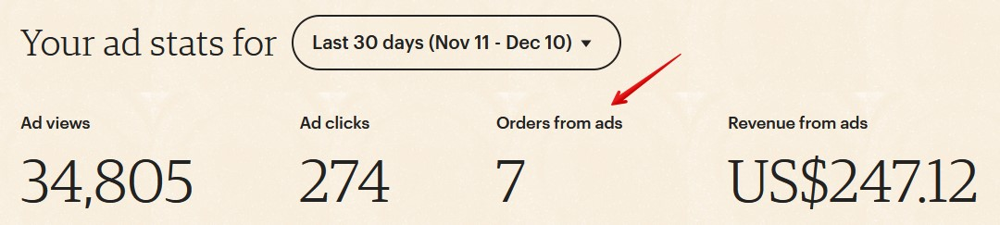
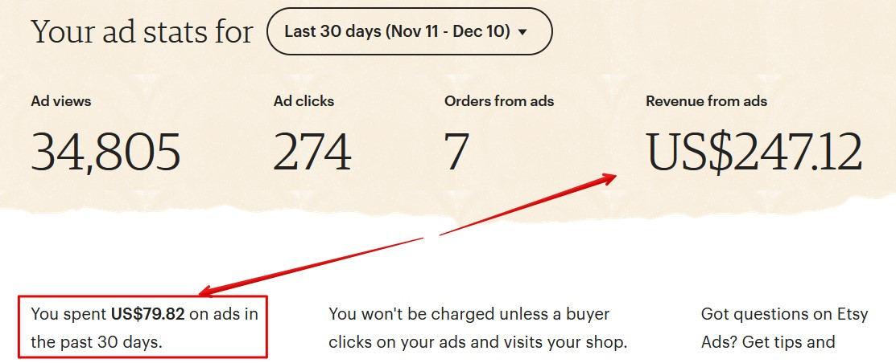
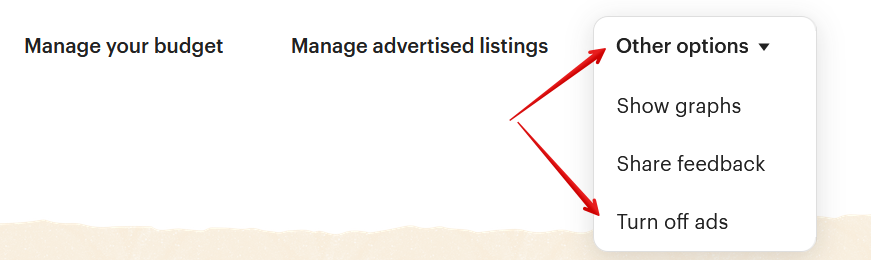
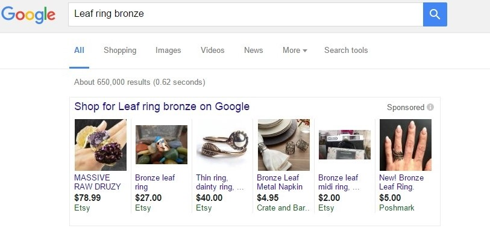
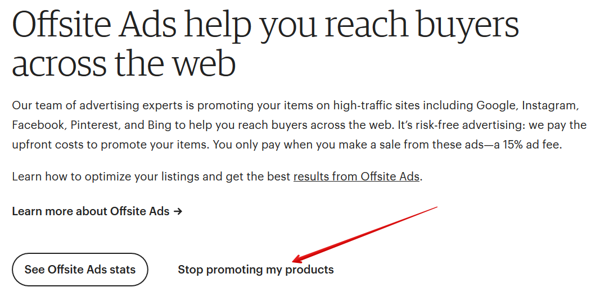

Как понять, купили ли у меня рекламируемый листинг
То, насколько эффективна реклама, вы можете посмотреть с помощью данных
на странице Marketing – Etsy Ads.
По умолчанию здесь показываются данные за последние 30 дней.
Количество заказов по рекламным листингам указано в пункте Orders from ads.
В данном случае Etsy говорит, что за прошедшие 30 дней было 7 заказов по
рекламе на общую сумму $247.12 (Revenue from ads).
Ниже на этой же странице есть таблица со списком всех листингов, которые
сейчас находятся в рекламе.
У каждого листинга указано количество заказов (Orders), которое он принёс, а
также полученная прибыль (Revenue).
Кроме того, на странице заказов Orders & Shipping возле некоторых заказов
есть вот такой значок рупора – это означает, что товар куплен после перехода
по рекламе.


Как считается продажа по рекламному листингу
Etsy считает, что продажа совершена после клика на рекламный листинг Etsy
Ads, если в течение 30 дней после клика этот же человек купил данный товар
или любой другой в вашем магазине.
Например, вы рекламируете зелёное платье. Покупатель кликнул на ваш ре-
кламный листинг, но в итоге заказал красное платье. В этом случае в статистике
рекламы заказ будет всё равно “приплюсован” к статистике зелёного платья.
По каким ключевым словам показывался мой листинг
Чтобы узнать, по каким ключевым фразам находили ваш рекламный листинг,
нужно перейти к списку рекламируемых товаров и нажать кнопку Search terms
возле нужного товара.
Если ключевые фразы отсутствуют (такое бывает, если объявление в рекламе
недавно и его ещё мало показывали), тогда этой ссылки у листинга не будет.
На открывшейся странице показана история поисковых фраз, по которым за
последние 30 дней показывали данный рекламный листинг.

Имейте в виду, что скорее всего не все запросы будут отображаться. Как гово-
рят сами Etsy, статистика обновляется с задержкой в пару дней.
Также в статистику попадают только запросы, по которым объявление показы-
вали более 5 раз. То есть Etsy не расскажут о малозапрашиваемых фразах.
Плюс в статистику не попадают фразы, которые посетители искали в мобильном
приложении Etsy.
Если вы хотите собрать перечень поисковых фраз всех листингов из рекламы,
перейдите на следующую страницу:
https://www.etsy.com/your/shops/me/advertising/analytics/
Как узнать, какие рекламные листинги были показаны по кон-
кретному запросу
Такой возможности на Etsy нет. Можно сделать только обратное – посмотреть
по каким фразам показан конкретный листинг.

Можно ли не показывать рекламу жителям определенной
страны
Посетитель Etsy увидит ваше рекламное объявление, если:
• вы отправляете товары в страну, где находится данный человек
• вы отправляете товары в страну, которую посетитель указал в поисковом
фильтре Ship to
Например, вы не отправляете товары в Австралию. В этом случае жители Ав-
стралии не увидят вашу рекламу на Etsy.
Но если австралиец хочет заказать подарок другу из США (куда вы отправля-
ете), то он выставит в поисковом фильтре Ships to значение United States (то
есть показывать товары, которые отправляют в США). В этом случае он увидит
ваш рекламный листинг.
Как понять, выгодно ли мне давать рекламу
Сравнить затраты на рекламу с её доходностью можно на странице Marketing –
Etsy Ads.
Нас здесь интересуют значения Revenue from ads (прибыль от рекламы) и You
spent XXX on ads (вы потратили на рекламу).


В данном случае, потрачено 79 долларов, а заработано 247.
Только вы можете оценить, насколько данное соотношение выгодно для вас.
Так как необходимо учитывать расходы на материалы, отправку, упаковку и т.п.
Кто-то из продавцов считает неплохим соотношение 1-к-3 (то есть на 1 потра-
ченный доллар приходится $3 прибыли). А для кого-то и 1-к-10 – это очень
невыгодно.
Если вы понимаете, что реклама для вас невыгодна – можно или вовсе от неё
отказаться, или попробовать рекламировать другие товары, или изменить вели-
чину дневного бюджета, или изменить SEO рекламируемых листингов.
Такой анализ эффективности рекламы лучше проводить хотя бы через один-
два месяца.
Как отключить Etsy Ads
Чтобы отключить Etsy Ads, нажмите кнопку Other options - Turn off ads.
После чего подтвердите своё решение.


Снова включить рекламу можно в любой момент.
Что такое реклама Offsite Ads
Помимо рекламы внутри Etsy, площадка может рекламировать ваши товары и
на других сайтах: Google, Facebook, Bing, Pinterest, Instagram.
Например, в Google реклама выглядим следующим образом:
Когда покупатель вводит определенную фразу, которую Google считает «про-
дающей», ему показываются рекламные объявления над результатами поиска.
Так рекламируются не только Etsy, но и многие другие онлайн-магазины.
Какие комиссии у Offsite Ads
В отличие от Etsy Ads, в рекламе Offsite Ads продавец платит комиссию только
в том случае, если у него что-то купили.
То есть, даже если к вам зашли 100 человек по этой рекламе, но ничего не
купили – вам ничего платить не нужно.
Если же продажа произошла, то продавец оплачивает дополнительную комис-
сию 15% с общей суммы заказа, которую оплатил покупатель.
У магазина, который за последние 12 месяцев продал товаров больше чем на
10 000 долларов США, процент комиссии снижается до 12%. А если доход в
какой-то момент снизится, то всё равно комиссия с продажи будет 12%.
Максимальный размер комиссии Offsite Ads с одного заказа не может превы-
шать 100 долларов.
Как считается продажа Offsite Ads
Комиссия будет начислена, если покупка в вашем магазина произошла в тече-
ние 30 дней после клика по вашему рекламному объявлению.
Если этот же покупатель совершит повторную покупку у вас в течение этих 30
дней – то нужно снова оплатить комиссию Offsite Ads.
Если человек кликнул на вашу рекламу, но купил у конкурента – комиссию ни-
кто не платит.
Если человек кликнул на рекламу конкурента, но купил у вас – комиссию также
никто не платит.
Как включить Offsite Ads
Offsite Ads включается у всех магазинов автоматически.
Если магазин за прошедшие 12 месяцев продал товаров меньше, чем на 10 000
долларов, то он может отключиться от рекламы Offsite Ads (и снова к ней под-
ключаться по своему желанию).
При этом, если за прошедшие 12 месяцев магазин продал товаров на общую
сумму 10 000 долларов США или больше, то он подключается к рекламе Offsite
Ads навсегда.
Доход за последние 12 месяцев пересчитывается в начале каждого месяца.

То есть, если ваш магазин в какой-то момент превысит доход в 10 000 долларов
за 12 месяцев, то вы не сможете отключиться от Offsite Ads. Даже если впослед-
ствии ваш доход опустится ниже 10 000 долларов.
Как отключить Offsite Ads
Вы можете отключить Offsite Ads только в том случае, если ваш магазин никогда
не продавал товаров больше, чем на 10 000 долларов за последние 12 месяцев.
Если это так, то рекламу Offsite Ads отключить можно.
Также учитывайте, что Etsy отключает рекламные листинги не сразу, а в течение
3-х дней. Поэтому, клики и продажи могут происходить и после отключения ре-
кламы. И если случится продажа – за неё нужно будет заплатить комиссию.
Чтобы отключить рекламу Offsite Ads, перейдите на странице Settings – Offsite
Ads и нажмите кнопку Stop promoting my products.
В открывшемся окне снова нажмите Stop promoting my products, а потом ещё раз
(в итоге нужно нажать 3 раза).
Если вы потом решите вновь включить этот рекламный инструмент, снова зай-
дите на страницу Settings – Offsite Ads и нажмите кнопку Restart Offsite Ads.


В открывшемся окне снова нажмите кнопку Restart Offsite Ads. После этого ре-
клама снова запустится.
Как выбрать, какие листинги рекламировать в Offsite Ads
Продавцы не могут самостоятельно выбирать, какие листинги рекламировать в
Offsite Ads. Etsy сами выбирают, что, когда и на каких рекламных сайтах пока-
зывать.
Как отследить продажи Offsite Ads
Статистика по Offsite Ads находится на следующей странице (доступна из раз-
дела Stats): https://www.etsy.com/your/shops/me/stats/offsite-ads
Здесь можно посмотреть, на какие объявления кликали (Advertised item), когда
кликнули и на каком сайте (Date clicked), что купили (Item shopper bought), когда
купили (Date of sale), сколько оплатили (Sale value) и размер комиссии (Ad fee).


11. Скидки и распродажи
Что такое купоны на скидку (Coupon Code)
На Etsy есть возможность создать коды скидки (Coupon Code), введя которые
во время заказа покупатели получат скидку.
Чтобы его создать, перейдите на страницу Shop Manager – Marketing – Sales and
coupons.
Здесь показан список созданных купонов и распродаж.
Возле каждой акции указано:
• срок действия Duration (например, May 16, 2018 – no end date, то есть с 16
августа 2018 и без даты окончания)
• сколько отправлено писем с купонами Sends (для купонов Abandoned Cart
и Recently favorited)
• сколько покупателей воспользовались скидкой/купоном (Uses)
• сколько заработано на продажах по этому купону (Revenue)
• значок «Active» означает, что купон активен и им можно воспользоваться
• купоны, срок действия которых завершился, выделены серым цветом
Чтобы создать новый купон, нажмите кнопку New special offer.
В открывшемся окне выберите вариант Create coupon.